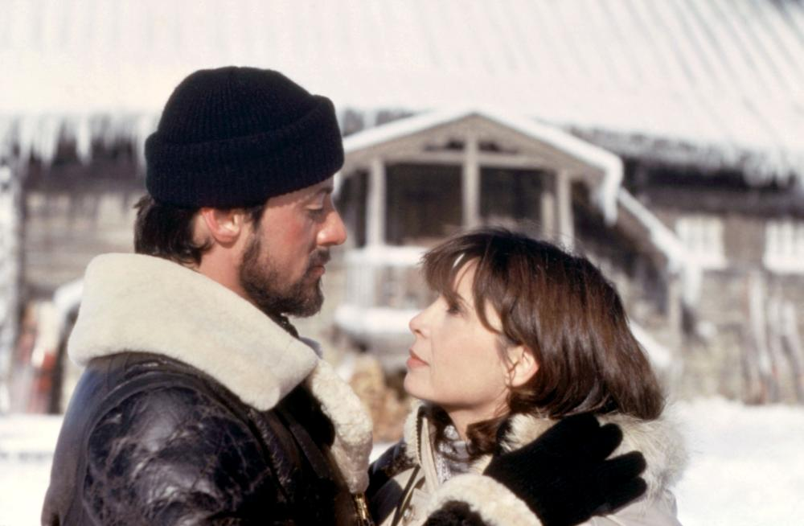

Choose an Experience
Intimacy

Padme Amidala & Anakin Skywalker: Star Wars: Episode II – Attack of the Clones (2002)
Yearning
Elizabeth Bennet & Mr. Darcy: Pride and Prejudice (2005)
Connection 
Rocky & Adrian: Rocky IV (1985)
For my exhibition, I want to explore the many facets that define romantic love. It’s a deeply human experience that is complex and multifaceted, showcased in a myriad of songs, films, and art. Yet, love is more than just saying “I love you.” It can be the intellectual connection of bantering and conversing for hours, losing track of time in the process. It can also be one-sided, love is intertwined with grief and loss, filled with regrets over unspoken feelings, or the ache of missing someone taken for granted. Sometimes, love is fleeting, leaving behind only a memory. With my exhibition, I aim to pay homage to the many forms of love that shape our lives.
Padme Amidala & Anakin Skywalker: Star Wars: Episode II – Attack of the Clones (2002)
Elizabeth Bennet & Mr. Darcy: Pride and Prejudice (2005)
Rocky & Adrian: Rocky IV (1985)